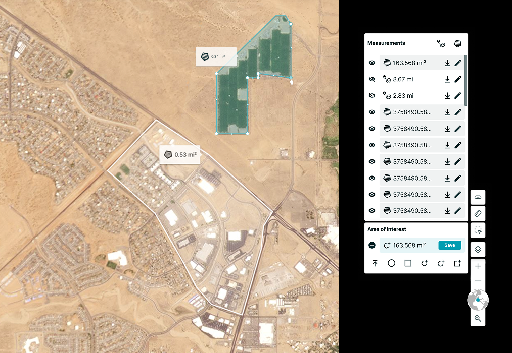
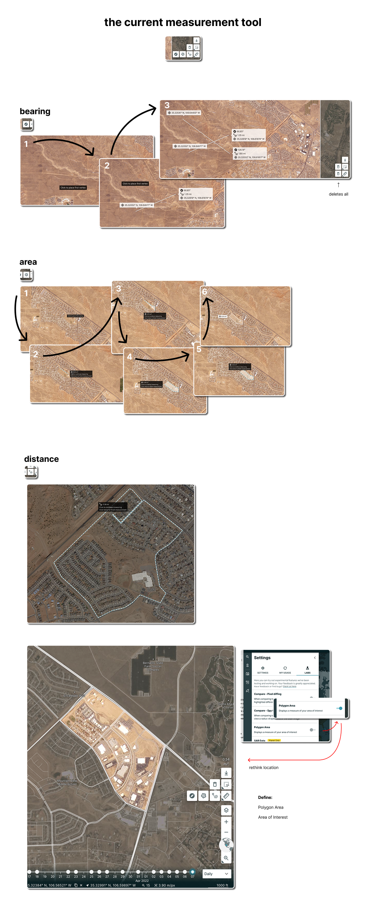
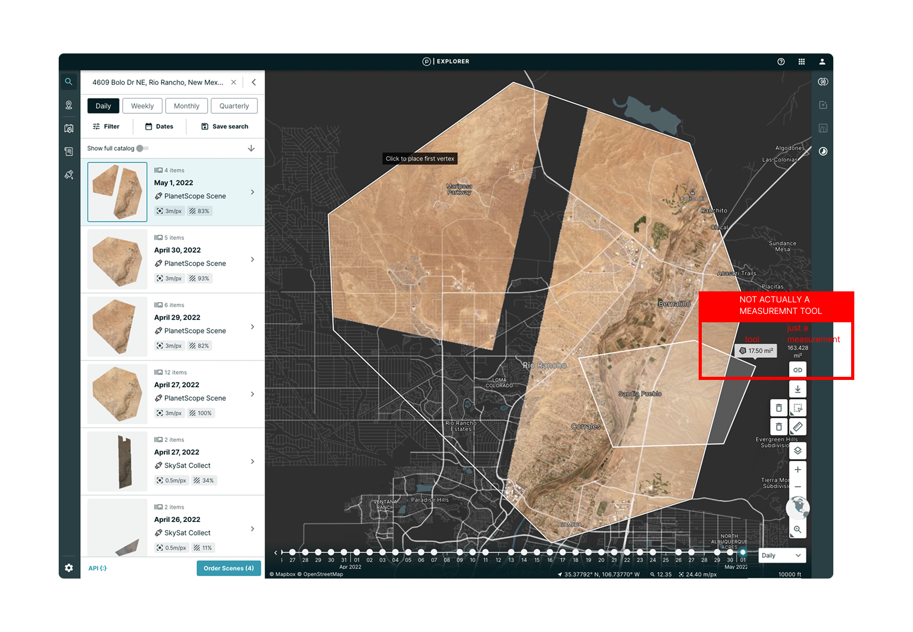
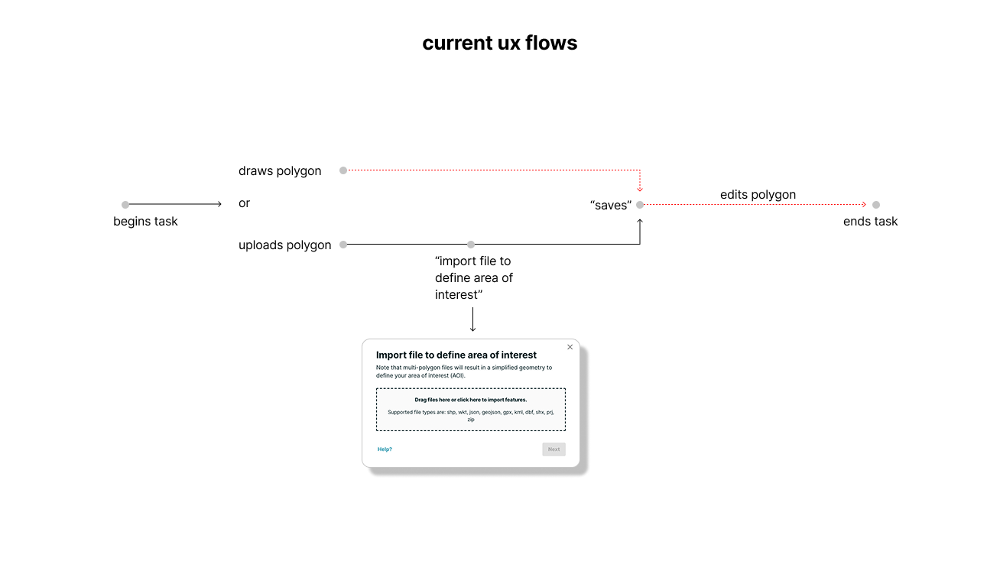
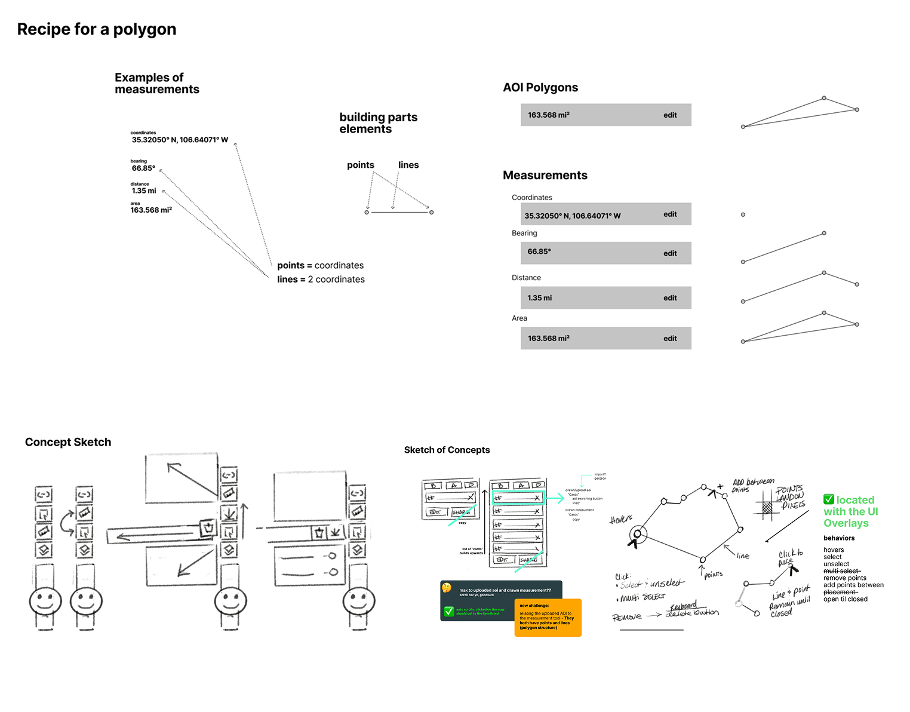
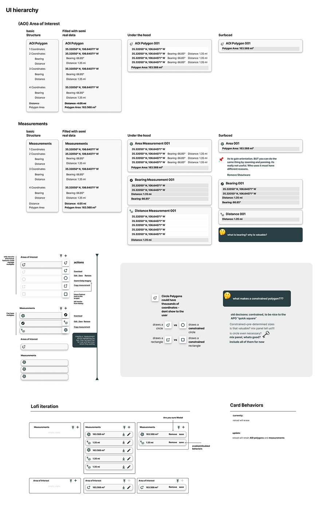
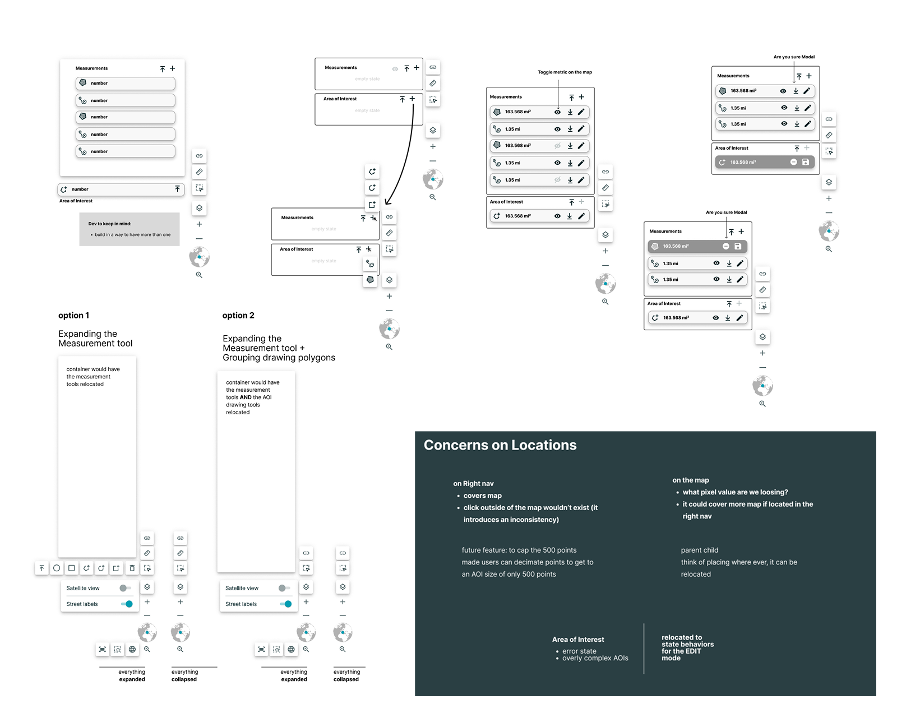
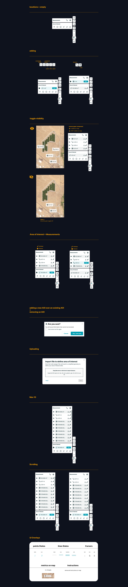
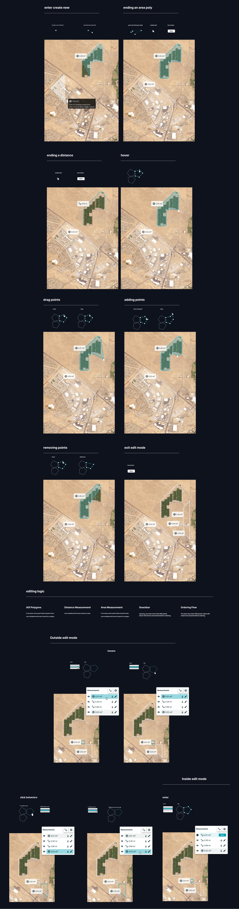

Geospatial Vectors
Taming the Wild West of Geospatial Vectors
Mapmakers just want to draw lines and shapes without fighting the software. We took Planet’s clunky, legacy vector-editing tools and completely overhauled them into a sleek, streamlined workspace. By replacing an unpredictable interface with an intuitive, scalable map toolkit, we stripped away user friction, stopped platform abandonment in its tracks, and supercharged workflow efficiency.
Lost in the Coordinates
We were dealing with a deeply frustrating user journey that risked pushing our core audience straight into the arms of competitor mapping tools:
The Business Threat
Users were actively abandoning Planet Explorer's vector tools because editing shapes felt like guesswork, directly threatening customer retention.
The "Planeteer" Pain
Internal users and clients were drowning in a sea of confusing "edit modes." Finding toolbar controls was a scavenger hunt, and making a simple mistake felt unpredictable and frustrating.
Auditing the tools


The 3-Month Sprint
Fixing this wasn’t just a design challenge; it was a race against time with a lean crew:
Two-Person Army
We only had two lead engineers available to implement the entire redesign.
Fragile Foundations
We were building on top of a fragile, legacy geospatial codebase that didn’t take kindly to massive, sweeping changes.
Mapping the user journey with the tool

A North Star of Complete Predictability
Our UX strategy was anchored on a single golden rule: keep the user on the map. We mapped out an experience framework built to eliminate cognitive load:
Old way
Bounce between side panels
New way
Single, unified map-side toolbar
We hypothesized that by consolidating all actions into one highly predictable toolbar and introducing buttery-smooth visual microinteractions, we could instantly eliminate mode confusion and build user confidence.
UI hierarchy structuring session

Auditing the Chaos
We didn’t just guess what was broken; we cracked open behavioral analytics, audited every single UI element, and ran co-design workshops with internal power users.
We battle-tested two distinct interface directions: a floating modular panel versus a consolidated map toolbar. Through intense, iterative prototyping sessions in Figma, we mapped out every single edge case—including how a user drags a vertex, snaps points together, handles bulk edits, or safely undoes a catastrophic misclick.
Exploring panel versus toolbar directions

Pixel-Perfect Precision
To turn our strategy into a production-ready reality, we engineered a unified, systemized visual language directly into Planet’s component library:
The Consolidated Toolbar
A tight, accessible anchor housing all creation, editing, and utility tools in a predictable hierarchy.
Intelligent Interaction States
We designed highly visible states for snapping physics, alignment guides, and active hover-state vertices.
Safety Nets
Clean modal dialogs and non-intrusive toast notifications that let users know their work was securely saved or successfully modified.
Dev Hand-off Precision
Every component was fully documented with precise redlines, spacing tokens, and motion easing curves to make our two-engineer team's life infinitely easier.
Option exercise with the team

Huddling with Engineering
With an engineering team of two, silos weren't an option. We hosted daily co-creation sessions with our Product Manager and engineers to review technical feasibility in real time. We balanced rendering lag against UI smoothing, ensuring that what looked great in Figma could actually run beautifully in production.
UI components

Seamless Mapping
The redesign completely transformed how users interact with Planet Explorer's map canvases:
Zero Friction
User sentiment flipped completely, with mapping professionals reporting that editing shapes "finally feels entirely natural."
Flawless Execution
Mode errors plummeted as users intuitively understood whether they were in "draw," "edit," or "navigation" states.
Fewer Fire Drills
Customer support tickets related to broken or confusing vector tools dropped off significantly.
Future-Proofing
The modular toolbar and vector components we built now serve as the official foundational framework for all upcoming geospatial analysis features.
Vector building states
